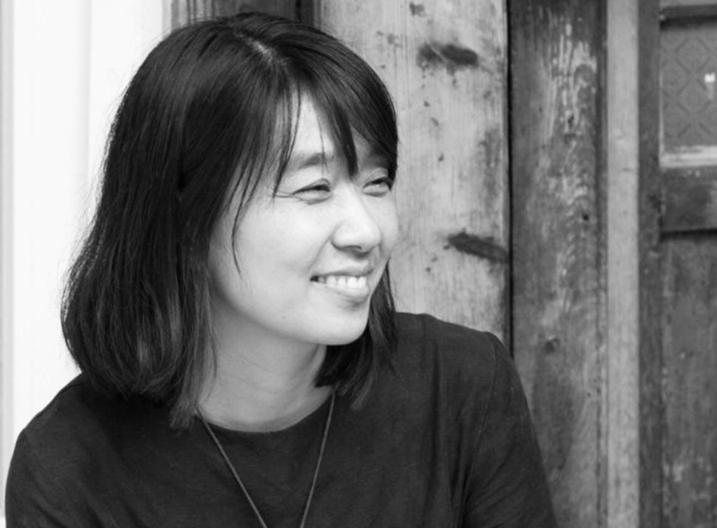
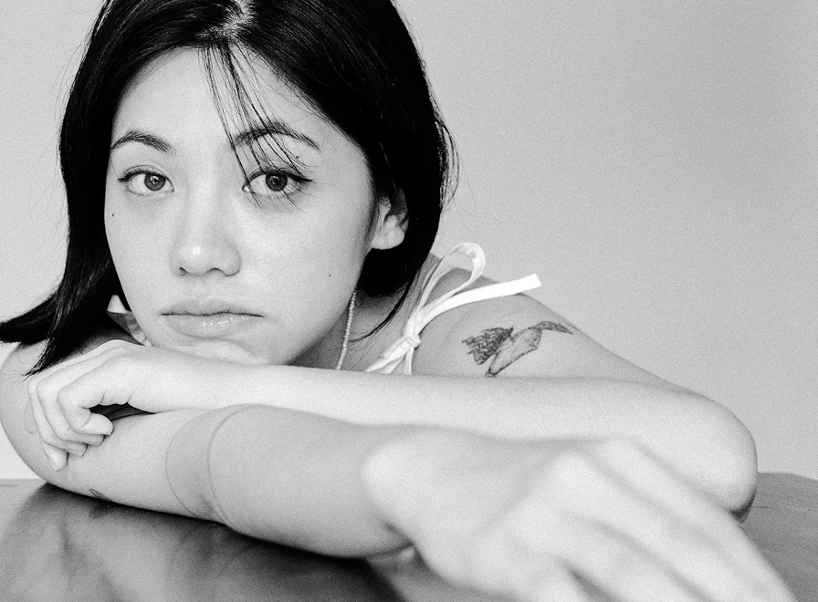
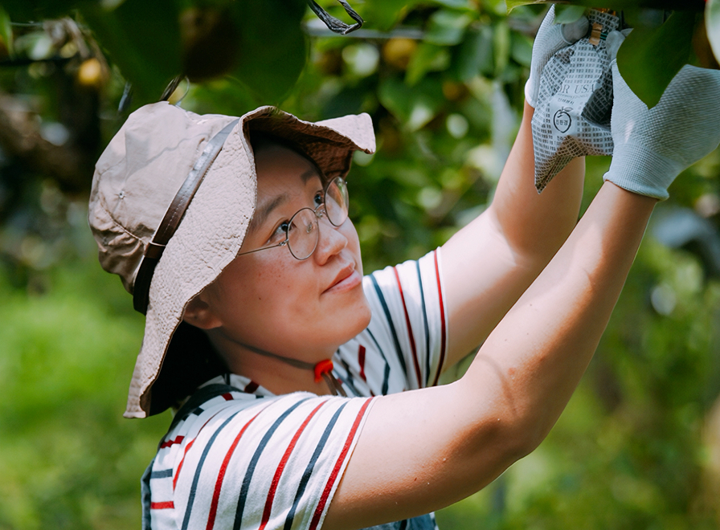
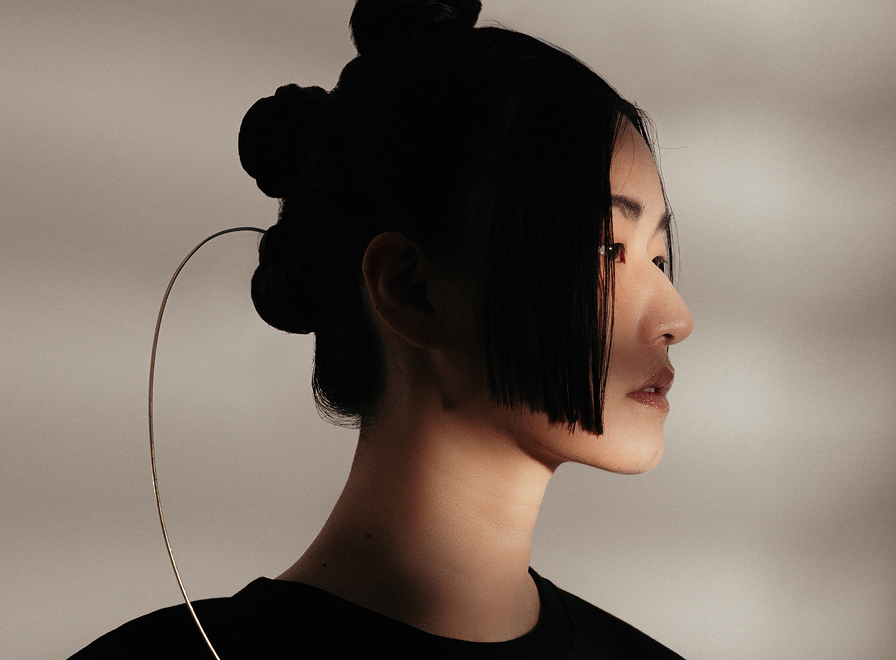
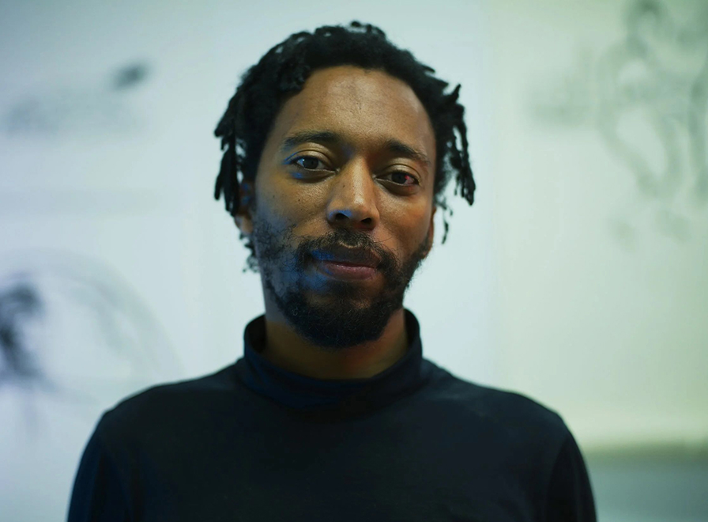

At the core of Liberation Space: Fortress/Nest are a cohort of inaugural Liberation Space Fellows, made up of cultural practitioners whose work engages key aspects of the exhibition, expanding the relational field of the living monument.
Rather than simple participation or advising, this Fellowship is conceived as a structure of parallel thinking and shared formation, a mode of accompanying practice through which this “Liberation Space” is shaped. Their works and stories are meant to be encountered and read by visitors as they move through the Pavilion. Each story poses a question to the nation-state—does it function as a fortress or a nest?—and also draws out a space in which the possibility of a nation for and by the vulnerable can emerge.

Photograph courtesy of Han Kang. Novelist Han Kang, recipient of the 2024 Nobel Prize in Literature, has been internationally recognized for a body of work that confronts historical violence and the fragility of human dignity with radical clarity and restraint. Her writing has come to occupy a singular place within contemporary Korean literature, not only for its aesthetic precision but for its sustained engagement with the unresolved traumas that have shaped modern Korean nationhood.
For Liberation Space: Fortress/Nest, an artwork by Han Kang titled The Funeral (2018) is integrated into Hyeree Ro’s Bearing as part of its “Mourning Station.”The Funeral is a sculptural visualization of the dream sequence that opens the novel We Do Not Part (2021), a contemplative work in which personal memory, historical violence, and fragile human bonds converge, all against the backdrop of the Jeju 4.3 Uprising and Massacre. This opening sequence is also reprinted in Liberation Space: Reader (1), alongside a newly commissioned illustration by Han Kang.

Photograph courtesy of Yezoi Hwang. Photographer and artist Yezoi Hwang repositions gestures often coded as feminine—cooking, caregiving, confession, and record-keeping—as tools of resistance. Her practice unfolds at the intersection of image and text, food and archive, weaving together intimate acts and documentary forms to propose alternative modes of witnessing and solidarity. Following the incumbent Korean president’s declaration of martial law in December 2024, Hwang turned her attention to tracing the unfolding atmosphere of public assembly and state response, capturing the moment when private sensibility expands into civic action and personal perception becomes inseparable from collective presence.
For Liberation Space: Fortress/Nest, Hwang contributes her journals and photographs to Liberation Space: Reader (1), in addition to several individual works to be transferred onto the “Remembering Station” of Hyeree Ro’s Bearing.

Photograph courtesy of Huju Kim. Farmer and activist Kim Huju played an instrumental role in the “Battle of Namtaeryeong,” a standoff between Korean farmers and police in December 2024. Through rapid, real-time information-sharing and urgent appeals on social media, Kim helped catalyze the spontaneous mobilization of ordinary young citizens, demonstrating how digital speech can precipitate collective action in real time. While this particular incident brought Kim Huju’s activism into the national spotlight, Kim’s practice has long intermingled life in the agricultural field with civic engagement. Rooted in the everyday labor of farming, Kim frames food, land, and rural life not as peripheral concerns, but as central to questions of democracy, environmental sustainability, food sovereignty, and collective survival.
For Liberation Space: Fortress/Nest, Kim contributes a collection of clay forms modeled after Korean indigenous seeds to the “Sharing Station” of Hyeree Ro’s Bearing, as well as writing an essay for Liberation Space: Reader (1) that draws on her personal experience of Namtaeryeong to identify a “Constellation of Liberation.”

Photograph courtesy of Lang Lee. Writer, artist, and singer-songwriter Lang Lee has long given voice to the margins and fault lines of Korean society, attending closely to the emotions and voices that take shape outside institutional structures and systems of power. While working within the form of popular music, Lee persistently invokes social realities like labor, gender, inequality, and solidarity through the textures of personal experience and embodied perception. In recent years, Lee has been actively performing and collaborating across Asia, building resonant connections with independent music communities and alternative cultural spaces in Japan, Taiwan, and Hong Kong and engaging broader regional conversations around precarity, care, and collective life.
For Liberation Space: Fortress/Nest, Lee composes a newly commissioned song titled Our ㅁ(mieum). Intended and performed as a call to community, sovereignty, and action, this piece is integrated into the “Sharing Station” of Hyeree Ro’s Bearing, and presented as a collective live performance during the preview and opening week of the Biennale. The lyrics are also included in Liberation Space: Reader (1).

Photograph courtesy of Hawai’i Contemporary. Rwandan-born Dutch artist Christian Nyampeta, who works between Amsterdam and New York, organizes programs, exhibitions, screenings, performances, and publications conceived as hosting structures for collective feeling, cooperative thinking, and mutual action. His work Scenes from a Revolution, part of a larger project called “Gwangju Lessons” (2020) developed in collaboration with curator Binna Choi, revisits the Gwangju People’s Art School to rematerialize its legacy as a resource for remembering—and (un)learning from—the May 18 Gwangju Democratic Uprising across geographies and generations.
For Liberation Space: Fortress/Nest, seventy-two lino plates from this work are integrated into the “Remembering Station” of Hyeree Ro’s Bearing, with one of two displayed plates rotated out each day for another. Nyampeta also lends his voice to Liberation Space: Reader (1), in a conversation with Ro about their collaboration.